6 主成分分析在R中的实现
本章介绍R中的主成分分析。
#安装和加载包
#install.packages("ggplot2")
#install.packages("tidyverse")
#install.packages("EFAtools")
#install.packages("factoextra")
library(ggplot2)
library(tidyverse)
library(EFAtools)
library(factoextra)第1步 评估数据是否适合做PCA
library(readr)
#读取数据文件
data <- read_csv("DataCampCombine.csv")
#提取data中的第5至12列，保存为combine
combine <- data[, 5:12]
#加载包EFAtools
library(EFAtools)
KMO(combine)
── Kaiser-Meyer-Olkin criterion (KMO) ──────────────────────────────────────────
✔ The overall KMO value for your data is meritorious.
These data are probably suitable for factor analysis.
Overall: 0.869
For each variable:
height weight forty vertical bench broad_jump three_cone
0.801 0.804 0.907 0.910 0.741 0.894 0.908
shuttle
0.919 library(EFAtools)
BARTLETT(combine)
✔ The Bartlett's test of sphericity was significant at an alpha level of .05.
These data are probably suitable for factor analysis.
𝜒²(28) = 23750.67, p < .001第2步 估计PCA
#方法一：调用prcomp函数
combine.pr <- prcomp(combine, scale = TRUE)
combine.prStandard deviations (1, .., p=8):
[1] 2.3679065 0.9227977 0.7890378 0.6134782 0.4681091 0.3717784 0.3483419
[8] 0.2526648
Rotation (n x k) = (8 x 8):
PC1 PC2 PC3 PC4 PC5
height 0.2913200 -0.36243690 -0.78456426 0.201411503 -0.10676615
weight 0.3982567 -0.23599332 -0.08084940 0.006795590 0.19904888
forty 0.3967636 0.08177256 -0.02806160 0.007186135 0.47533576
vertical -0.3467039 -0.37295634 -0.11888605 -0.570750251 0.50876800
bench 0.2433913 -0.73405585 0.56077575 0.100768662 -0.16400782
broad_jump -0.3707226 -0.29425658 -0.20956737 -0.282435248 -0.38806157
three_cone 0.3779002 0.12306906 0.06454279 -0.546224235 0.08716904
shuttle 0.3733848 0.16307221 -0.02114816 -0.495272480 -0.52830179
PC6 PC7 PC8
height 0.04131390 -0.25540971 -0.22209123
weight -0.03852389 0.23485745 0.82634941
forty -0.10347494 0.61777481 -0.46557052
vertical 0.36727384 -0.07881529 -0.02938450
bench 0.01827782 -0.06658600 -0.21361784
broad_jump -0.51246785 0.48890122 0.00708534
three_cone -0.56866804 -0.45335440 -0.05483418
shuttle 0.51465642 0.20678970 -0.03889983#方法二：计算combine的相关系数矩阵的特征值和特征向量
combine %>% cor() %>% eigen()eigen() decomposition
$values
[1] 5.60698132 0.85155552 0.62258070 0.37635549 0.21912616 0.13821921 0.12134208
[8] 0.06383951
$vectors
[,1] [,2] [,3] [,4] [,5] [,6]
[1,] -0.2913200 -0.36243690 0.78456426 -0.201411503 -0.10676615 0.04131390
[2,] -0.3982567 -0.23599332 0.08084940 -0.006795590 0.19904888 -0.03852389
[3,] -0.3967636 0.08177256 0.02806160 -0.007186135 0.47533576 -0.10347494
[4,] 0.3467039 -0.37295634 0.11888605 0.570750251 0.50876800 0.36727384
[5,] -0.2433913 -0.73405585 -0.56077575 -0.100768662 -0.16400782 0.01827782
[6,] 0.3707226 -0.29425658 0.20956737 0.282435248 -0.38806157 -0.51246785
[7,] -0.3779002 0.12306906 -0.06454279 0.546224235 0.08716904 -0.56866804
[8,] -0.3733848 0.16307221 0.02114816 0.495272480 -0.52830179 0.51465642
[,7] [,8]
[1,] 0.25540971 0.22209123
[2,] -0.23485745 -0.82634941
[3,] -0.61777481 0.46557052
[4,] 0.07881529 0.02938450
[5,] 0.06658600 0.21361784
[6,] -0.48890122 -0.00708534
[7,] 0.45335440 0.05483418
[8,] -0.20678970 0.03889983combine.pr$sdev^2[1] 5.60698132 0.85155552 0.62258070 0.37635549 0.21912616 0.13821921 0.12134208
[8] 0.06383951#查看主成分的方差贡献率、累计方差贡献率
summary(combine.pr)Importance of components:
PC1 PC2 PC3 PC4 PC5 PC6 PC7
Standard deviation 2.3679 0.9228 0.78904 0.61348 0.46811 0.37178 0.34834
Proportion of Variance 0.7009 0.1064 0.07782 0.04704 0.02739 0.01728 0.01517
Cumulative Proportion 0.7009 0.8073 0.88514 0.93218 0.95957 0.97685 0.99202
PC8
Standard deviation 0.25266
Proportion of Variance 0.00798
Cumulative Proportion 1.00000第3步 确定保留的主成分的个数
# 计算各个主成分的方差
pr.var <- combine.pr$sdev^2
pr.var[1] 5.60698132 0.85155552 0.62258070 0.37635549 0.21912616 0.13821921 0.12134208
[8] 0.06383951# 计算各个主成分的方差贡献率
pve <- pr.var/sum(pr.var)
pve[1] 0.700872665 0.106444440 0.077822587 0.047044437 0.027390770 0.017277401
[7] 0.015167760 0.007979939#绘制各个主成分的方差贡献率
plot(pve, xlab = "Principal Component",
ylab = "Proportion of Variance Explained",
ylim = c(0, 1), type = "b")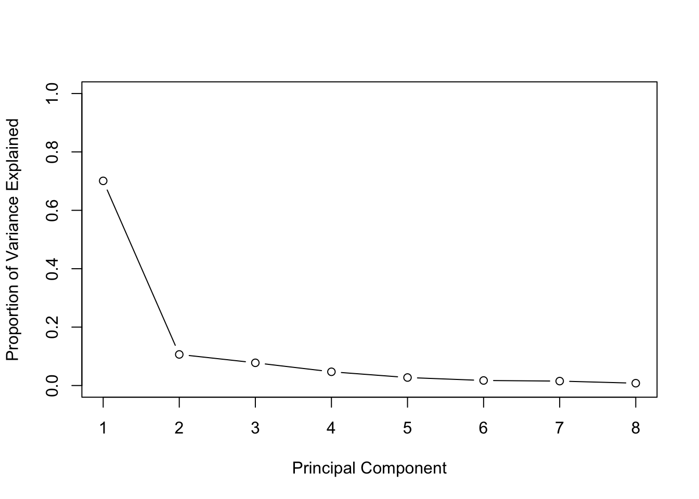
# 绘制累计方差贡献率
plot(cumsum(pve), xlab = "Principal Component",
ylab = "Cumulative Proportion of Variance Explained",
ylim = c(0, 1), type = "b")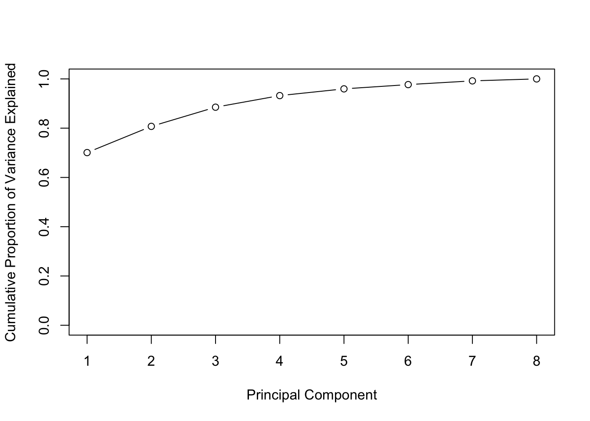
# 绘制碎石图
library(factoextra)
fviz_eig(combine.pr)Warning in geom_bar(stat = "identity", fill = barfill, color = barcolor, :
Ignoring empty aesthetic: `width`.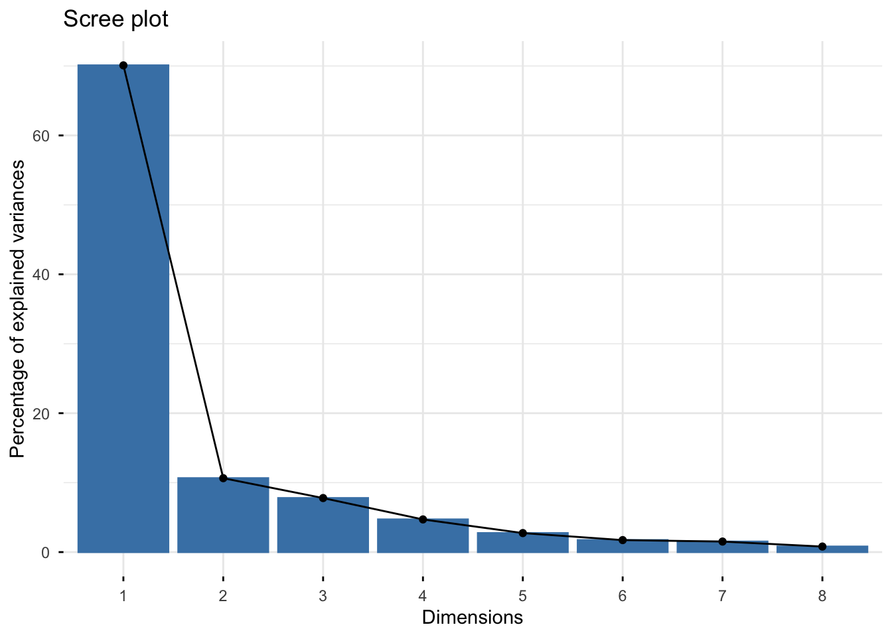
第4步 可视化
# 绘制主成分1和主成分2的分组散点图
combine.pcscore <- cbind(data,combine.pr$x)
combine.pcscore %>% ggplot(aes(PC1,PC2, col= position))+
geom_point()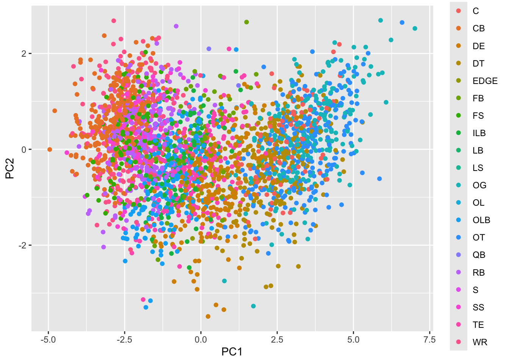
combine.pcscore %>% ggplot(aes(PC2,PC3, col= position))+
geom_point()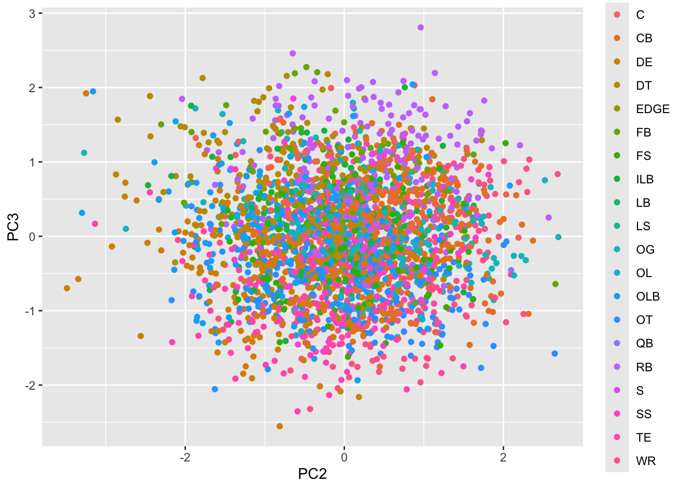
#Graph of individuals.
#Individuals with a similar profile are grouped together.
fviz_pca_ind(combine.pr,
col.ind = "cos2", # Color by the quality of representation
geom = c("point"),
gradient.cols = c("#00AFBB", "#E7B800", "#FC4E07"),
repel = TRUE # Avoid text overlapping
)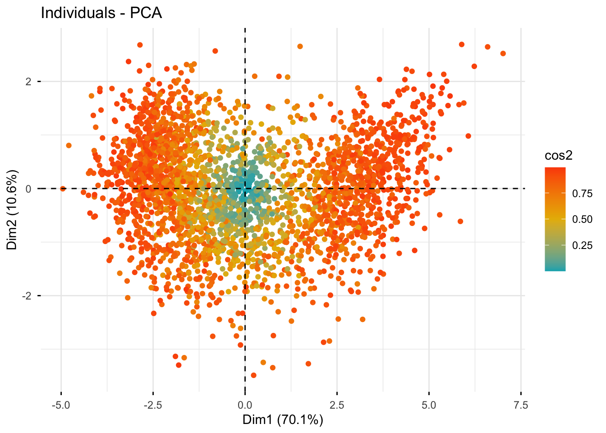
# Graph of variables.
# Positive correlated variables point to the same side of the plot.
# Negative correlated variables point to opposite sides of the graph.
fviz_pca_var(combine.pr,
col.var = "contrib", # Color by contributions to the PC
gradient.cols = c("#00AFBB", "#E7B800", "#FC4E07"),
repel = TRUE # Avoid text overlapping
)Warning: Using `size` aesthetic for lines was deprecated in ggplot2 3.4.0.
ℹ Please use `linewidth` instead.
ℹ The deprecated feature was likely used in the ggpubr package.
Please report the issue at <https://github.com/kassambara/ggpubr/issues>.Warning: `aes_string()` was deprecated in ggplot2 3.0.0.
ℹ Please use tidy evaluation idioms with `aes()`.
ℹ See also `vignette("ggplot2-in-packages")` for more information.
ℹ The deprecated feature was likely used in the factoextra package.
Please report the issue at <https://github.com/kassambara/factoextra/issues>.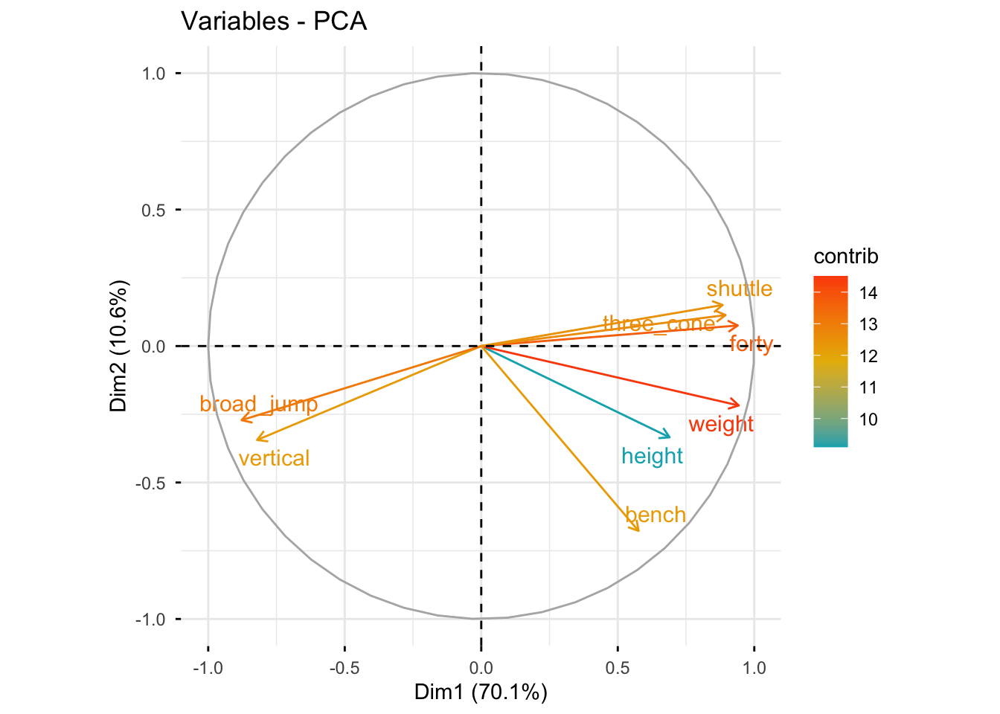
#Biplot of individuals and variables
fviz_pca_biplot(combine.pr, repel = TRUE,
geom = c("point"),
col.var = "#2E9FDF", # Variables color
col.ind = "#696969" # Individuals color
)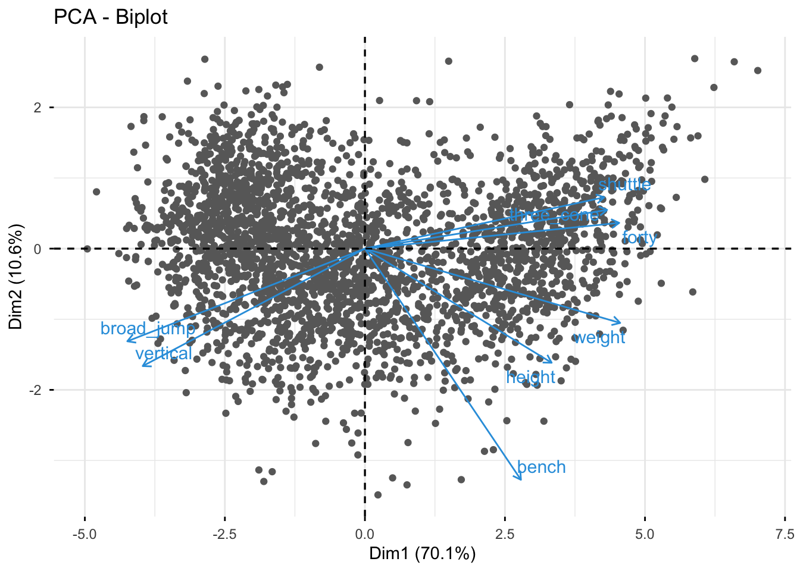
教材例题6.1 六门课程成绩
library(readr)
eg6_1 <- read_csv("eg6.1.csv")
eg6_1 <- eg6_1 %>% rename(数学 = x1,
物理 = x2,
化学 = x3,
语文 = x4,
历史 = x5,
英语 = x6)#第1步：评估原始变量的相关性
library(EFAtools)
KMO(eg6_1)ℹ 'x' was not a correlation matrix. Correlations are found from entered raw data.
── Kaiser-Meyer-Olkin criterion (KMO) ──────────────────────────────────────────
✔ The overall KMO value for your data is meritorious.
These data are probably suitable for factor analysis.
Overall: 0.804
For each variable:
数学 物理 化学 语文 历史 英语
0.805 0.825 0.760 0.837 0.806 0.779 library(psych)
Attaching package: 'psych'The following object is masked from 'package:EFAtools':
KMOThe following objects are masked from 'package:ggplot2':
%+%, alphaKMO(eg6_1)Kaiser-Meyer-Olkin factor adequacy
Call: KMO(r = eg6_1)
Overall MSA = 0.8
MSA for each item =
数学 物理 化学 语文 历史 英语
0.80 0.83 0.76 0.84 0.81 0.78 #指定包的名称
EFAtools::KMO(eg6_1)ℹ 'x' was not a correlation matrix. Correlations are found from entered raw data.
── Kaiser-Meyer-Olkin criterion (KMO) ──────────────────────────────────────────
✔ The overall KMO value for your data is meritorious.
These data are probably suitable for factor analysis.
Overall: 0.804
For each variable:
数学 物理 化学 语文 历史 英语
0.805 0.825 0.760 0.837 0.806 0.779 psych::KMO(eg6_1)Kaiser-Meyer-Olkin factor adequacy
Call: psych::KMO(r = eg6_1)
Overall MSA = 0.8
MSA for each item =
数学 物理 化学 语文 历史 英语
0.80 0.83 0.76 0.84 0.81 0.78 #p值小于0.05，拒绝“原始变量的相关系数矩阵是单位阵，即
#原始变量相互独立”的原假设。
BARTLETT(combine)ℹ 'x' was not a correlation matrix. Correlations are found from entered raw data.
✔ The Bartlett's test of sphericity was significant at an alpha level of .05.
These data are probably suitable for factor analysis.
𝜒²(28) = 23750.67, p < .001#第2步：估计主成分
eg6_1.pr <- prcomp(eg6_1, scale = TRUE)
eg6_1.prStandard deviations (1, .., p=6):
[1] 1.9261112 1.1236019 0.6639552 0.5200978 0.4117231 0.3830929
Rotation (n x k) = (6 x 6):
PC1 PC2 PC3 PC4 PC5 PC6
数学 0.4120520 0.3759773 0.21582978 -0.78801362 -0.0205822 0.14450829
物理 0.3811779 0.3567060 -0.80555264 0.11755209 0.2120360 -0.14061074
化学 0.3321347 0.5626165 0.46743533 0.58763655 -0.0333622 0.09068468
语文 -0.4611846 0.2785231 -0.04426879 -0.02783261 0.5990449 0.59003773
历史 -0.4205876 0.4147836 -0.25039004 -0.03376008 -0.7384344 0.20479353
英语 -0.4301372 0.4065022 0.14612244 -0.13410793 0.2221800 -0.74902427#第3步：查看主成分的方差累计贡献率，确定提取几个主成分
summary(eg6_1.pr)Importance of components:
PC1 PC2 PC3 PC4 PC5 PC6
Standard deviation 1.9261 1.1236 0.66396 0.52010 0.41172 0.38309
Proportion of Variance 0.6183 0.2104 0.07347 0.04508 0.02825 0.02446
Cumulative Proportion 0.6183 0.8287 0.90220 0.94729 0.97554 1.00000#方差贡献率的计算过程
eg6_1.summary <- summary(eg6_1.pr)
eg6_1.summary$sdev^2/sum(eg6_1.summary$sdev^2)[1] 0.61831740 0.21041354 0.07347275 0.04508363 0.02825265 0.02446003# 绘制碎石图、去掉网格线
library(factoextra)
library(ggplot2)
fviz_eig(eg6_1.pr) + theme_classic()Warning in geom_bar(stat = "identity", fill = barfill, color = barcolor, :
Ignoring empty aesthetic: `width`.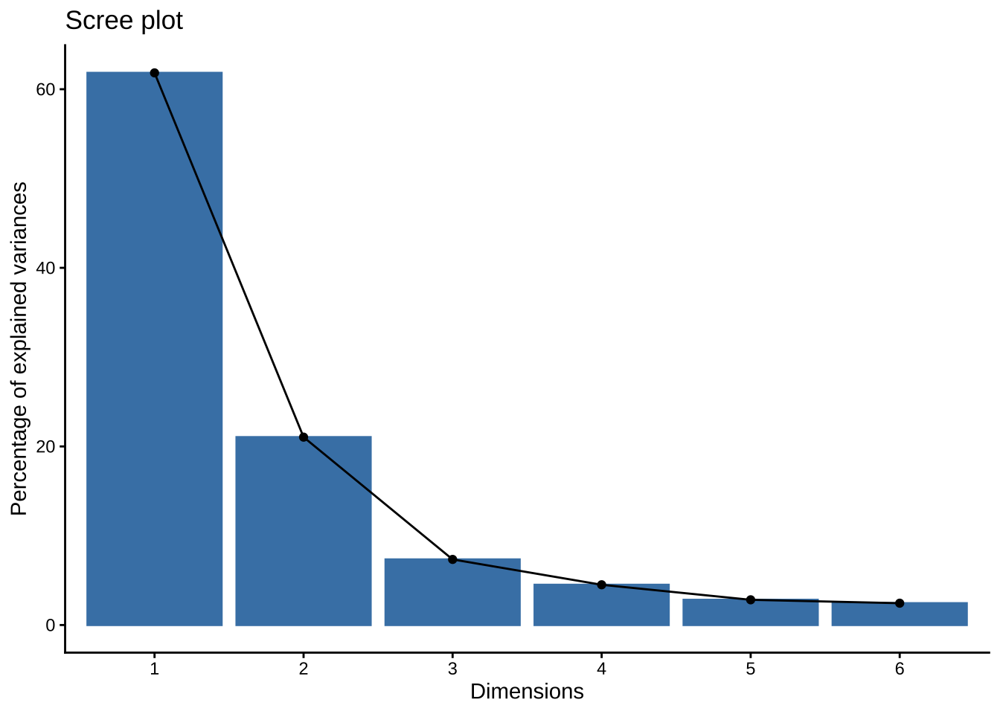
#纵轴代表特征值，也就是主成分的方差
fviz_eig(eg6_1.pr, choice = c("eigenvalue"))Warning in geom_bar(stat = "identity", fill = barfill, color = barcolor, :
Ignoring empty aesthetic: `width`.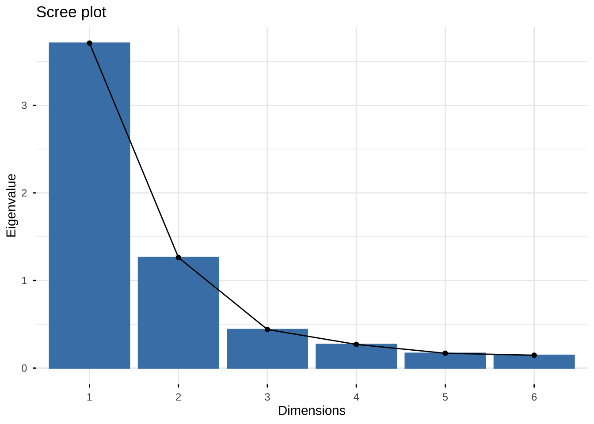
#纵轴特征值，也就是方差贡献百分比
fviz_eig(eg6_1.pr, choice = c("variance"))Warning in geom_bar(stat = "identity", fill = barfill, color = barcolor, :
Ignoring empty aesthetic: `width`.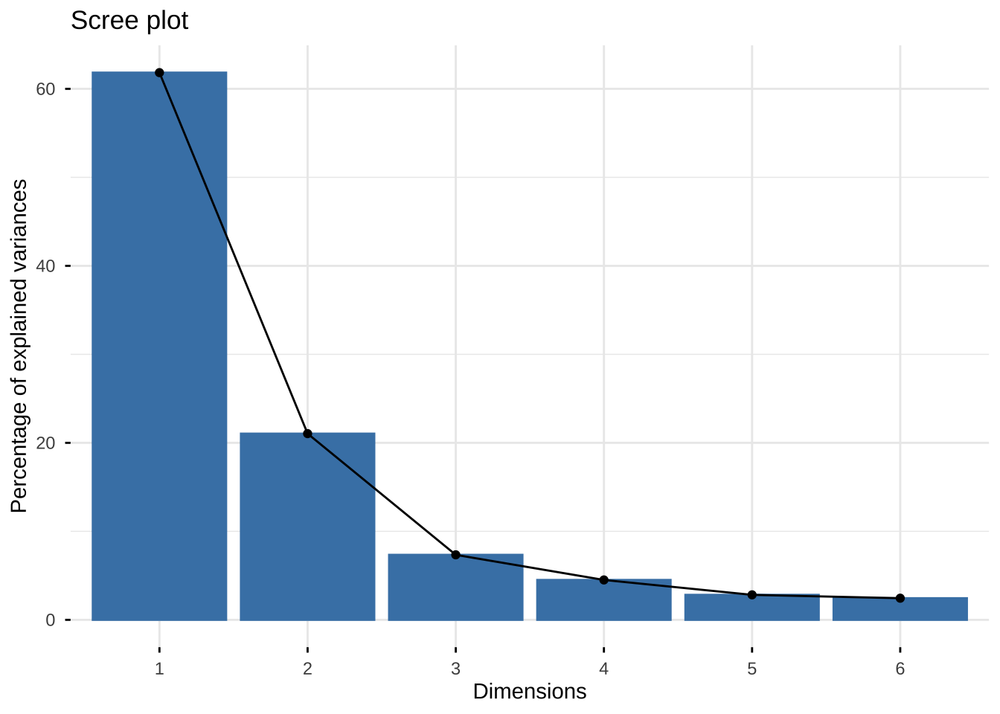
#只显示条形
fviz_eig(eg6_1.pr, choice = c("eigenvalue"),
geom = c("bar"))Warning in geom_bar(stat = "identity", fill = barfill, color = barcolor, :
Ignoring empty aesthetic: `width`.#只画折线
fviz_eig(eg6_1.pr, choice = c("eigenvalue"),
geom = c("line"))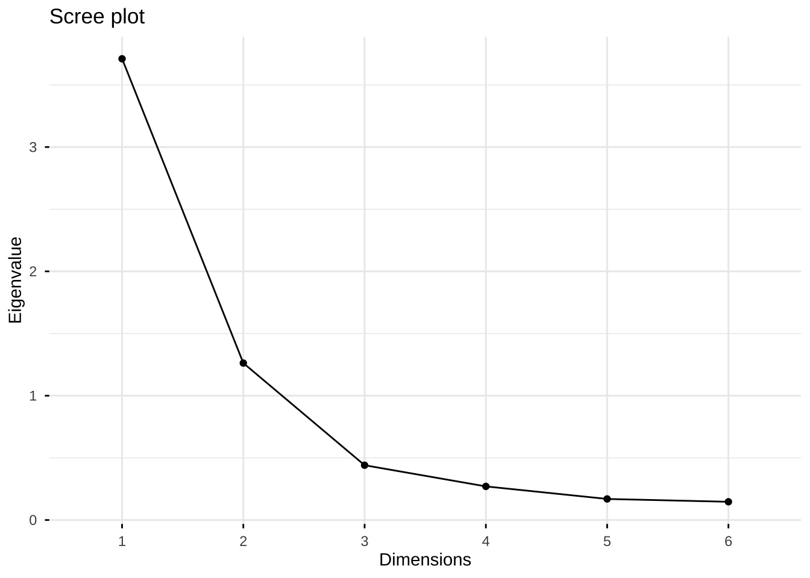
#标注方差贡献率
fviz_eig(eg6_1.pr,
addlabels = TRUE,
ylim = c(0, 70))Warning in geom_bar(stat = "identity", fill = barfill, color = barcolor, :
Ignoring empty aesthetic: `width`.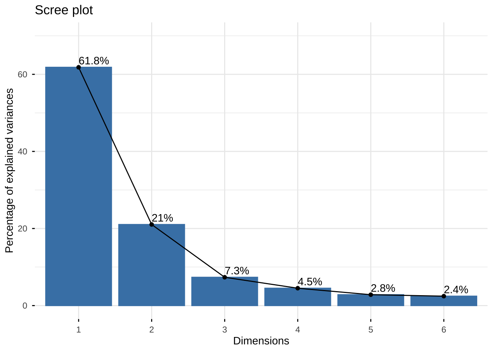
eg6_1.pr <- prcomp(eg6_1, scale = TRUE)
#第4步：可视化
library(factoextra)
# 图形1 ：主成分与原始变量关系的可视化
#绘制变量相关圈variable correlation circle
#用于理解主成分与原始变量的关系、概括主成分的含义
#正相关的变量指向一个方向
#负相关的变量指向相反的方向
#原始变量的箭头长度(cos2)越长（越接近圆圈），代表该变量对主成分的贡献越大。
#原始变量的箭头长度越短（越接近圆心），代表该变量对主成分的贡献越小。
fviz_pca_var(eg6_1.pr)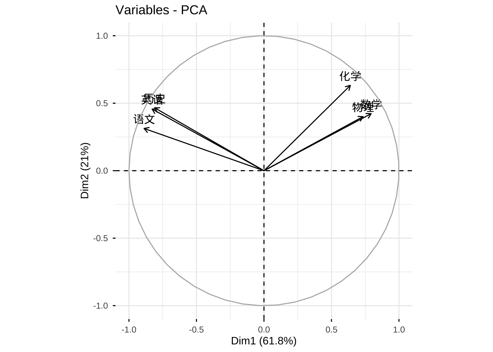
fviz_pca_var(eg6_1.pr, repel = TRUE)eg6_1.pr$rotation[,1:2] PC1 PC2
数学 0.4120520 0.3759773
物理 0.3811779 0.3567060
化学 0.3321347 0.5626165
语文 -0.4611846 0.2785231
历史 -0.4205876 0.4147836
英语 -0.4301372 0.4065022# 相关图上的箭头上色，颜色由cos2映射
# cos2越高，代表主成分对该原始变量的代表性越好
fviz_pca_var(eg6_1.pr,
col.var = "cos2",
gradient.cols = c("#00AFBB", "#E7B800", "#FC4E07") ,
repel = TRUE # Avoid text overlapping
)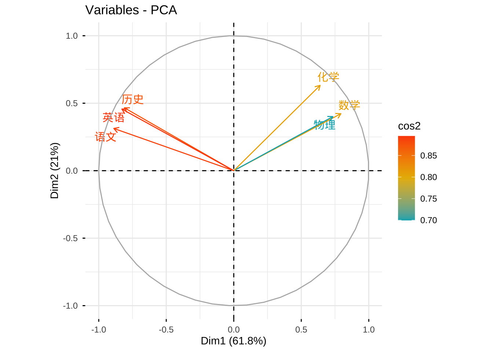
########################################
# 关于coordinates、cos2的解释
#保存主成分模型的coord, cos2, contribution到对象var
var <- get_pca_var(eg6_1.pr)
#coord中保存的是原始变量与主成分之间的相关系数，
#也就是用来绘制correlation circle中各个原始变量的角度的横坐标和纵坐标
var$coord Dim.1 Dim.2 Dim.3 Dim.4 Dim.5 Dim.6
数学 0.7936579 0.4224488 0.14330131 -0.40984419 -0.008474167 0.05536011
物理 0.7341911 0.4007955 -0.53485088 0.06113859 0.087300128 -0.05386698
化学 0.6397283 0.6321570 0.31035612 0.30562850 -0.013735989 0.03474066
语文 -0.8882928 0.3129491 -0.02939249 -0.01447568 0.246640599 0.22603929
历史 -0.8100985 0.4660516 -0.16624777 -0.01755854 -0.304030481 0.07845496
英语 -0.8284920 0.4567466 0.09701875 -0.06974925 0.091476633 -0.28694591var$cos2 Dim.1 Dim.2 Dim.3 Dim.4 Dim.5 Dim.6
数学 0.6298929 0.17846300 0.0205352655 0.1679722565 0.0000718115 0.003064742
物理 0.5390366 0.16063706 0.2860654588 0.0037379273 0.0076213123 0.002901652
化学 0.4092523 0.39962243 0.0963209238 0.0934087814 0.0001886774 0.001206914
语文 0.7890640 0.09793715 0.0008639187 0.0002095454 0.0608315849 0.051093762
历史 0.6562595 0.21720411 0.0276383223 0.0003083024 0.0924345334 0.006155180
英语 0.6863990 0.20861747 0.0094126388 0.0048649573 0.0083679743 0.082337958# cor(eg6_1[,1:6], eg6_1[,7:8])
#cos2: represents the quality of representation for variables on the factor map.
#var.cos2 = var.coord * var.coord
var$coord Dim.1 Dim.2 Dim.3 Dim.4 Dim.5 Dim.6
数学 0.7936579 0.4224488 0.14330131 -0.40984419 -0.008474167 0.05536011
物理 0.7341911 0.4007955 -0.53485088 0.06113859 0.087300128 -0.05386698
化学 0.6397283 0.6321570 0.31035612 0.30562850 -0.013735989 0.03474066
语文 -0.8882928 0.3129491 -0.02939249 -0.01447568 0.246640599 0.22603929
历史 -0.8100985 0.4660516 -0.16624777 -0.01755854 -0.304030481 0.07845496
英语 -0.8284920 0.4567466 0.09701875 -0.06974925 0.091476633 -0.28694591var$cos2 Dim.1 Dim.2 Dim.3 Dim.4 Dim.5 Dim.6
数学 0.6298929 0.17846300 0.0205352655 0.1679722565 0.0000718115 0.003064742
物理 0.5390366 0.16063706 0.2860654588 0.0037379273 0.0076213123 0.002901652
化学 0.4092523 0.39962243 0.0963209238 0.0934087814 0.0001886774 0.001206914
语文 0.7890640 0.09793715 0.0008639187 0.0002095454 0.0608315849 0.051093762
历史 0.6562595 0.21720411 0.0276383223 0.0003083024 0.0924345334 0.006155180
英语 0.6863990 0.20861747 0.0094126388 0.0048649573 0.0083679743 0.082337958#cos2, coordinates square,
#绘制cos2, 原始变量与主成分1的相关系数的平方
fviz_cos2(eg6_1.pr, choice = "var", axes = 1)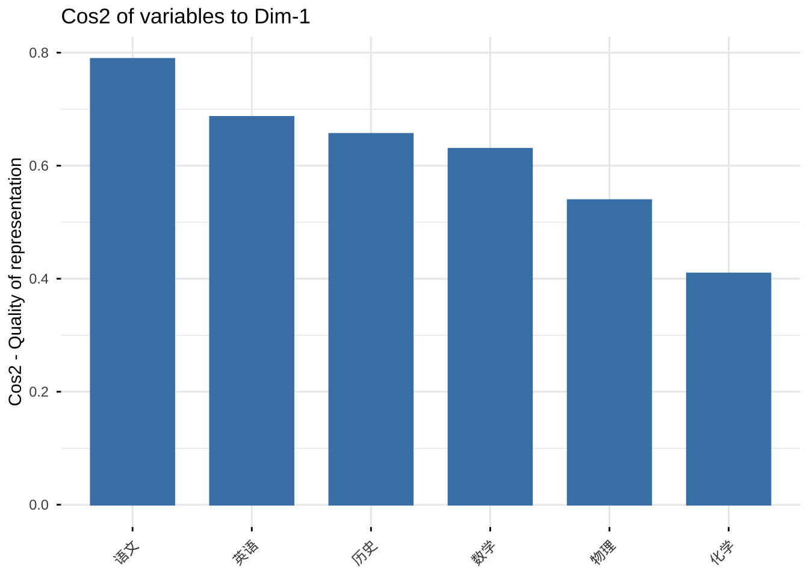
#绘制cos2, 原始变量与主成分2的相关系数的平方
fviz_cos2(eg6_1.pr, choice = "var", axes = 2)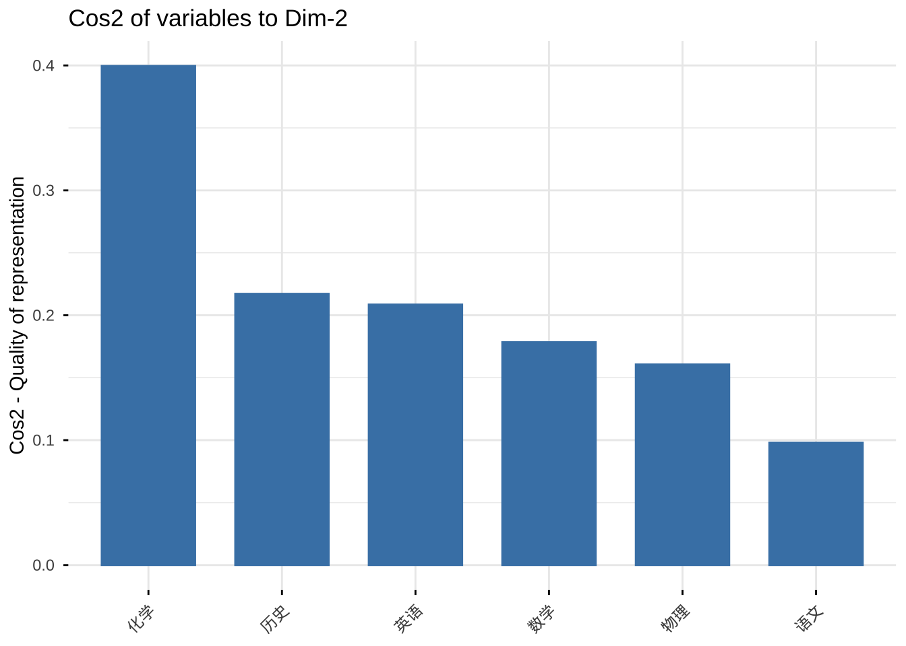
#绘制cos2, 原始变量与主成分1的相关系数的平方加上
#原始变量与主成分2的相关系数的平方
fviz_cos2(eg6_1.pr, choice = "var", axes = 1:2)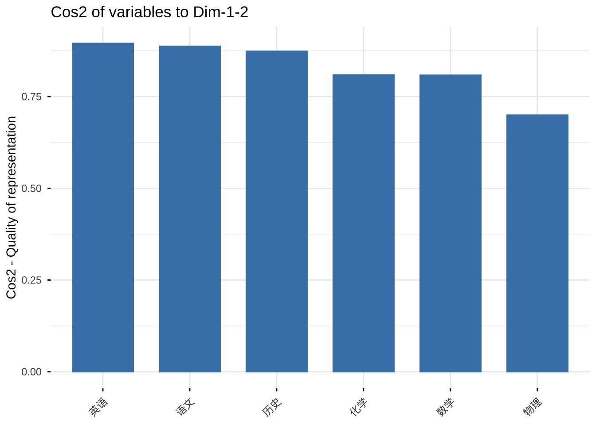
#相关图中箭头的长度
(var$coord[1,1]^2+var$coord[1,2]^2)[1] 0.8083559(var$coord[2,1]^2+var$coord[2,2]^2)[1] 0.6996736(var$coord[3,1]^2+var$coord[3,2]^2)[1] 0.8088747(var$coord[4,1]^2+var$coord[4,2]^2)[1] 0.8870012(var$coord[5,1]^2+var$coord[5,2]^2)[1] 0.8734637(var$coord[6,1]^2+var$coord[5,2]^2)[1] 0.9036031######################################### 图形二：主成分得分的绘图
# 绘制第1主成分得分PC1、第2主成分得分PC2的散点图
# 目的：考察个案特征
eg6_1.pr$x PC1 PC2 PC3 PC4 PC5 PC6
[1,] -1.82801578 -0.09774573 0.496554492 0.37531852 0.216838996 0.18858325
[2,] 1.36957543 -0.92363399 -0.027270510 0.15992646 -0.144730443 0.74352402
[3,] -0.04404518 -2.77735633 -0.218312577 -0.36425478 0.047490937 0.41202491
[4,] 1.24344067 -0.40192760 -0.347376507 -0.01068838 -0.020417583 -0.02479218
[5,] 1.12802022 -2.24682192 -0.004029778 0.57783495 -0.322574328 -0.20976639
[6,] 3.48354770 -0.81182701 -1.061580211 0.15425802 -0.755318260 -0.16450792
[7,] 3.48222891 0.10302271 0.099718688 0.56805599 -0.010503741 0.07899609
[8,] 0.97281421 -2.30392245 -1.279438891 0.01653812 0.091920817 -0.05156237
[9,] -2.22492555 0.12858355 0.403654325 -0.22136502 -1.276847814 0.05955883
[10,] 1.65883510 -0.32152985 -0.494620481 0.38338372 0.652123419 0.38222226
[11,] 1.16558228 -0.75330152 0.794820856 -0.58945334 -0.331171700 0.18892464
[12,] -1.14538916 0.21270898 0.363964422 1.15866006 -0.675692952 -0.21494634
[13,] 1.92545570 0.77563704 1.277711543 -0.17257678 -0.211798029 0.26101361
[14,] -0.12900145 0.89989567 0.934960367 -0.39336875 -0.014975114 -0.84385047
[15,] 0.08854097 -1.26358243 0.768766039 0.77708539 -0.513855238 0.10112564
[16,] 1.60573608 0.05169666 0.365746917 -0.86456705 -0.321341273 -0.03477852
[17,] 0.64448760 0.53982991 -0.555296069 0.20566267 0.373844198 0.11534184
[18,] -1.69239494 1.00237044 0.109898095 0.08056794 -0.610445402 0.43969290
[19,] -2.79166363 0.86731231 -0.278112822 -0.73873220 0.022232783 0.12746991
[20,] -0.04436381 1.49203527 -0.693540903 -0.29241088 -0.191781086 -0.33216607
[21,] -1.73075202 1.17313539 -1.034530877 0.15253020 0.105298073 -0.34744231
[22,] 1.85323334 1.16214343 -0.048519089 0.32190419 -0.277702566 0.14544013
[23,] 1.87817524 1.47518819 1.002074258 -0.07314951 1.005247023 -0.29703815
[24,] 0.45491328 0.12444464 0.292937307 0.49419969 -0.837098013 -0.12117799
[25,] 2.71096239 0.57346820 -0.670309964 -0.20298088 -0.384445347 -0.72558819
[26,] 0.83317099 2.09694725 0.538582948 0.15463117 -0.069760851 0.19042623
[27,] -0.70060183 -0.66298387 -0.744682632 0.37333726 0.241642649 -0.37289764
[28,] -1.94039850 -1.57847767 0.741591401 0.23533455 0.306232656 -0.07481691
[29,] -0.96747355 -0.03414673 -0.115517843 1.42444259 0.518167149 0.26363198
[30,] -4.44616949 0.68610551 -0.613596039 -0.82429927 -0.053822861 0.02856007
[31,] -2.92953436 -1.10247715 0.686506484 0.46009444 0.049460121 0.12266841
[32,] -2.19224874 -1.06118440 1.400336332 0.24645410 0.161097471 -0.31855347
[33,] -0.34208549 2.16623067 0.409744777 -0.22246119 0.018259869 0.84599570
[34,] 2.18986871 0.12759717 -0.684130253 0.29836001 0.419206727 -0.52239533
[35,] 0.55576937 0.31362143 0.682144661 -0.38304667 -0.481498297 -0.23967015
[36,] 0.35249985 -1.12014862 -1.008873229 0.41541718 -0.027697248 0.39127499
[37,] -1.86333415 -1.48144945 -0.085322118 -1.15560379 0.365177994 0.41507841
[38,] 2.91091646 -0.10888236 0.736704460 -0.13765967 0.472875050 0.18436362
[39,] -0.76557586 0.08203817 -0.678880347 -0.36983832 0.149687389 -0.31434942
[40,] 1.74633073 1.21252680 -0.785624236 -0.10106537 -0.118512087 0.46418440
[41,] -1.17927765 0.54029456 0.043103208 0.52477082 0.392763943 0.85184466
[42,] 0.27242672 -0.39798252 0.177003272 -0.56179631 -0.006370543 -0.38875640
[43,] 1.34560815 0.99353205 0.161066139 -0.22354588 0.304759708 0.15504759
[44,] 0.69032270 -1.38685633 1.265711917 -0.17958652 0.667742742 -0.44520615
[45,] 3.93655383 1.04362590 0.145739446 -0.34607156 0.249842938 -0.04870460
[46,] -0.43562712 -1.25887138 -0.280258356 -1.18629361 0.203323183 0.51345149
[47,] -0.38829822 0.73093725 -0.973224637 0.15790302 0.352306291 -0.39608010
[48,] -1.02423889 -0.98095582 0.254217699 -0.36237348 0.104208561 -0.82635734
[49,] -4.57778638 0.98688597 -0.233276531 0.71706461 0.286516858 -0.46058879
[50,] -1.18959851 -0.64506274 -0.645479120 -0.50502678 -0.236012865 -0.04742546
[51,] -1.99218570 1.40948536 -0.204405149 -0.04823791 -0.054029776 0.08158819
[52,] -1.93403066 0.74982739 -0.387050884 0.09671823 0.170135871 0.07138491# 方法一：
#将eg6_1.pr中保存的主成分得分eg6_1.pr$x追加到原始数据eg6_1中
eg6_1 <- cbind(eg6_1,eg6_1.pr$x)
#在数据框eg6_1中添加一列ID
eg6_1 <- eg6_1 %>% mutate(ID = 1:52)
#绘制分PC1和PC2的散点图，给散点加上个案标签
eg6_1 %>% ggplot(aes(PC1,PC2,label = ID))+
geom_point()+
geom_text(hjust=0, vjust=0)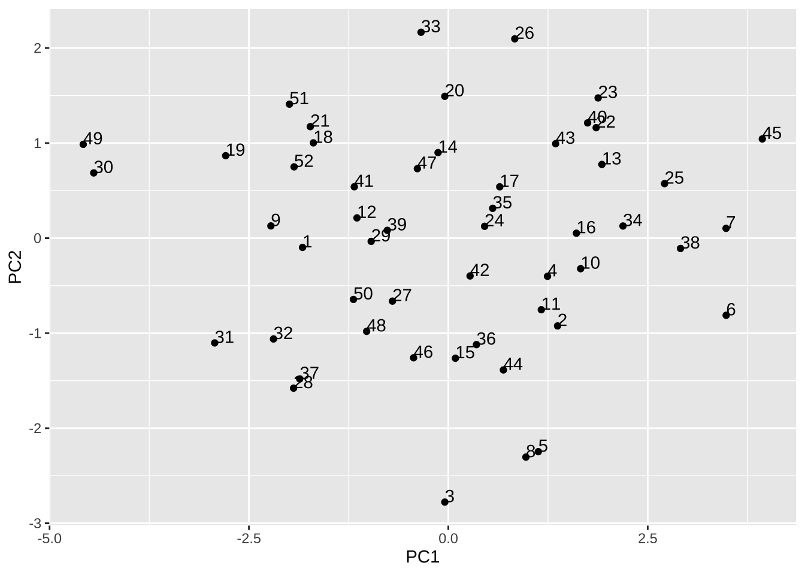
#给个案标签加上小方框
library(ggrepel)
eg6_1 %>% ggplot(aes(PC1,PC2))+
geom_point()+
geom_label_repel(aes(label = ID)) +
theme_classic()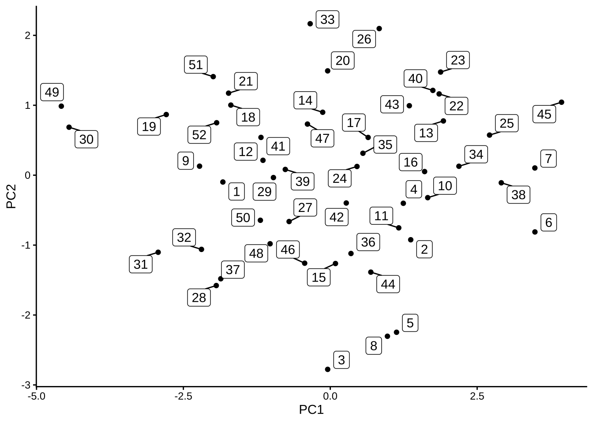
#避免个案标签的遮盖geom_text_repel()
#添加水平和垂直辅助线
library(ggrepel)
eg6_1 %>% ggplot(aes(PC1,PC2))+
geom_point()+
geom_text_repel(aes(label = ID)) +
theme_classic()+
geom_hline(yintercept = 0,
linetype="dashed",
color = "gray")+
geom_vline(xintercept = 0,
linetype="dashed",
color = "gray")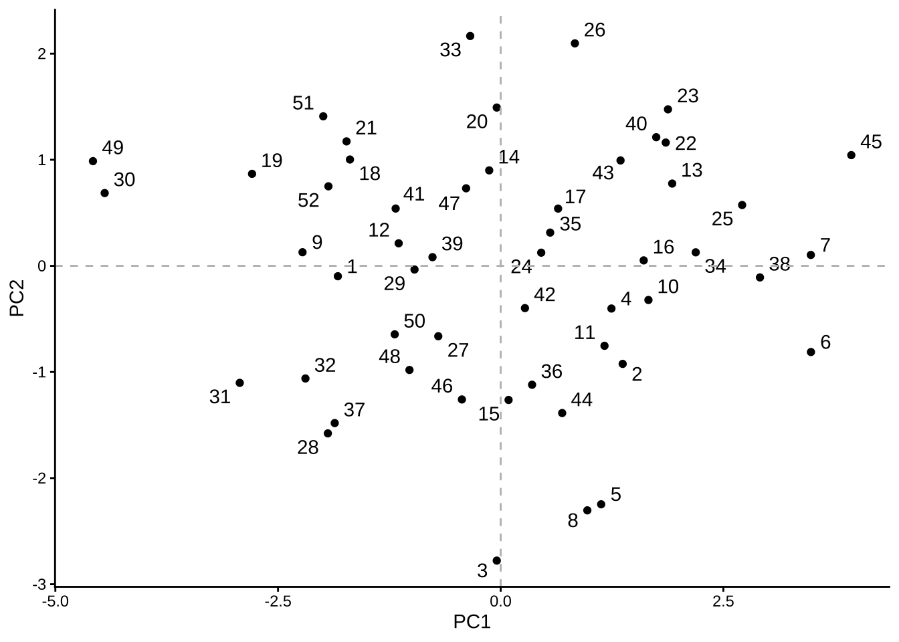
# 方法二：
#绘制第1主成分和第2主成分的散点图
library(factoextra)
fviz_pca_ind(eg6_1.pr)
#不要遮挡标签
fviz_pca_ind(eg6_1.pr, repel = TRUE)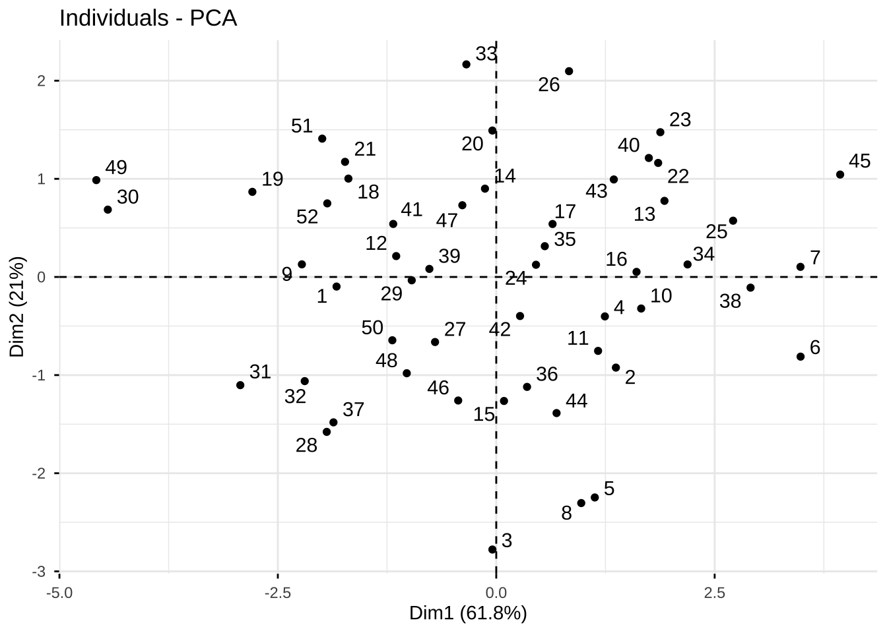
#给点加上颜色，第1主成分得分映射颜色
#查看第1主成分得分低或者得分高的个案，理解第一主成分的含义
fviz_pca_ind(eg6_1.pr, repel = TRUE,
col.ind = eg6_1.pr$x[,1])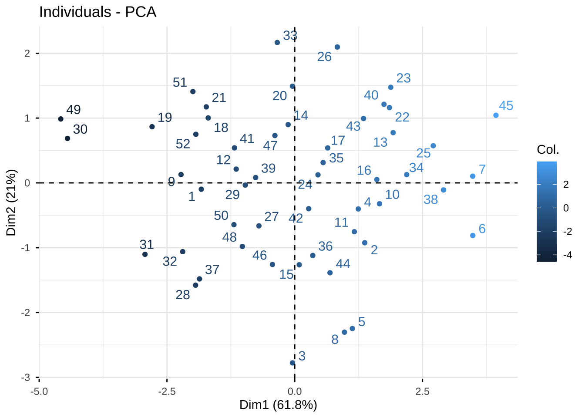
#给点加上颜色，第2主成分得分映射颜色
fviz_pca_ind(eg6_1.pr, repel = TRUE,
col.ind = eg6_1.pr$x[,2])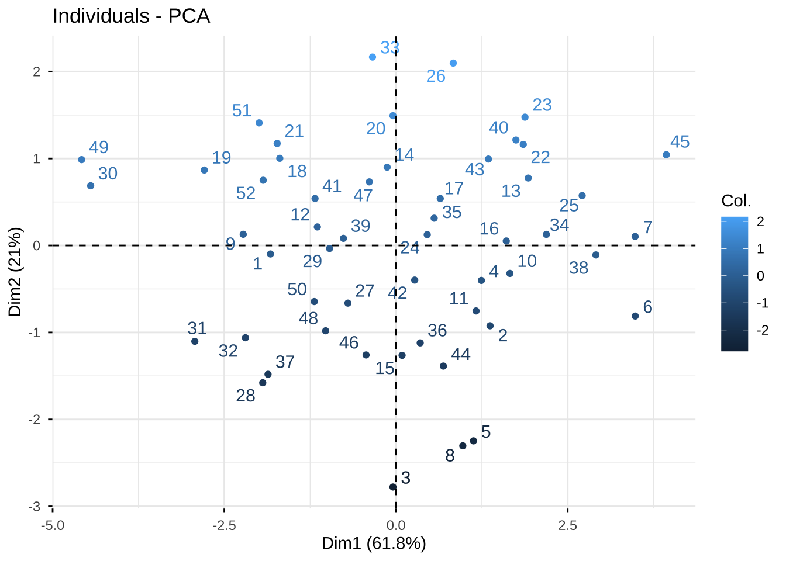
#在eg6_1中增加性别变量female
eg6_1$female <- as.factor(rbinom(52,1,0.5))
fviz_pca_ind(eg6_1.pr, repel = TRUE,
col.ind = eg6_1$female)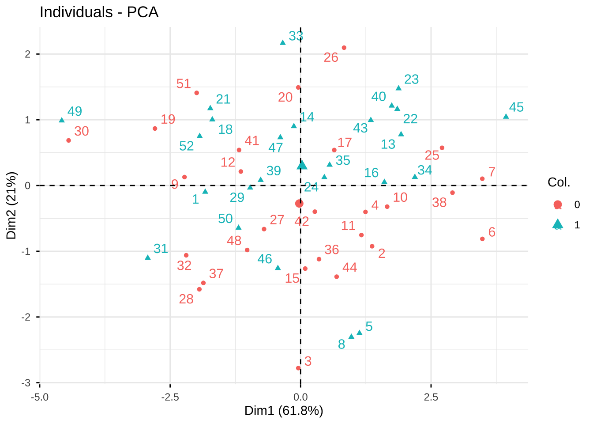
本章作业
答题要求：将R的命令和输出结果转成图片，上传至91速课平台。
提示：计算主成分模型，可以使用教材例题中的princomp函数，也可以使用本讲义中的prcomp函数。
习题1: 教材P119,例题6.1
要求：实现例题中的所有输出结果。
习题2: 教材P119,例题6.2
要求：实现例题中的所有输出结果。
习题3: 教材P137,习题6.7 要求：
3.1 报告主成分载荷。 3.2 你提取了几个主成分？其方差贡献率分别是多少？ 3.3 绘制碎石图。 3.4 绘制前两个主成分得分的散点图。